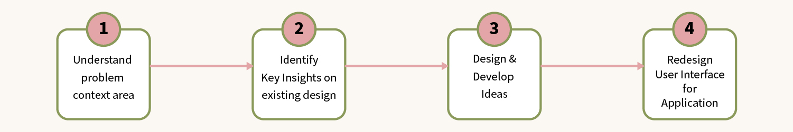
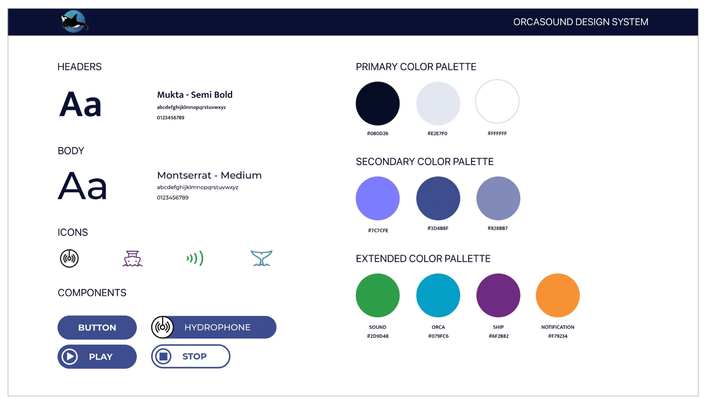

Orcasound live listening mobile app design
Overview of the project:
ABOUT ORCASOUND: Orcasound live listening app is a responsive website design of orca sound website (ORCASOUND.NET) . Orcasound is a website that provides 24/7 access to audio streams of underwater microphones called hydrophones installed in 3 different locations in the Salish Sea. The main purpose of Orcasound is to encourage concerned citizen scientists to take conservation action on behalf of the Southern Resident Killer Whales, which are listed as endangered under the Endangered Species Act.
CLIENT: (ORCASOUND.NET)
METHODS: Second Iteraction, Design feature research, come up with new design ideas.
TIMELINE: Aug 2020 - Jan 2022
TOOLS: Zoom for communication, Google suite, Figma, pen & paper.
STATUS: Under developement
MY ROLE: We are 7 members of UX Design team working on second iteration process of mobile version of orca sound live listening application. As a part of UX design team I have understood key insights on usability studies report on first interaction of the live listening application to come up with new design ideas to improve the onboard experience of the application. Produce those ideas with 10 members of peoples, includes the stakeholders, UX team leads and remaining our UX design team members to implement those ideas on the application. Participated in usability studies on second iterated application [2/10] to identify user problems while user interacts with the application.
DESIGN CHALLENGE: 1. Redesign and improve the mobile interface of the application that helps users easily interact with. 2. Use the remaining color palette from the branding to improve the interface look and feel. 3. Realign the elements from the existing design to improve more accessibility of the design.
DESIGN PROCESS:

Process
Discovery & Understanding needs
This is a volunteer design project for Orcasound listening mobile application. Using this application, users can listen to orca sound lively and record those sounds and send them to marine science centers to conserve them.
Key Insights:
Update navigation of the mobile application that helps users to easily complete their tasks.
Improve the color of the mobile application that helps to improve the look and feel of the application.
Improve the hierarchy of the elements that helps to improve the accessibility of the application.
Improve the total UI of the application.
Design system
Solution:

Conclusion
Outcomes
Improved the existing mobile interface and increase the user interactivity for the application.
Interesting part that I have learned during this project is: Every week we have design standup meetings where we are discussing our design ideas and progress on the project. In that meeting I proposed the idea of putting a live chat icon for the mobile application. Since using this application users can more effectively report the orca sound to the marine center. After listening my ideas the stakeholder and lead UX Designers was explained that putting live chat icon have so many developing and maintaining time and cost. After listening to their answers I have realized that as a designer when we are designing something that should work in real life for the users.
Note: These designs are under development. We are discussing with the developers to bring this high mockups to be published soon.